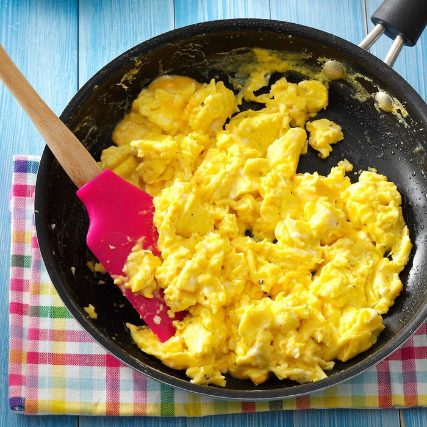

Scrambled Eggs

Description
"When our son, Chris, wants something other than cold cereal in the morning, he whips up these eggs. Cheese
and evaporated milk make them especially good. They're easy to make when you're camping, too." —Chris
Pfleghaar, Elk River, Minnesota.
Ingredients
- large eggs
- 1/4 cup evaporated milk or half-and-half cream
- 1/4 teaspoon salt
- 1/8 teaspoon pepper
- 1 tablespoon canola oil
- 2 tablespoons cheese dip
Steps
- In a bowl, whisk eggs, milk, salt and pepper. In a large skillet, heat oil over medium heat. Pour in egg
mixture; stir in cheese dip. Cook and stir until eggs are thickened and no liquid egg remains.